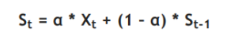
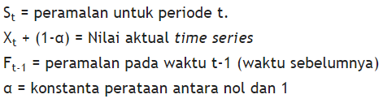
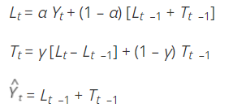
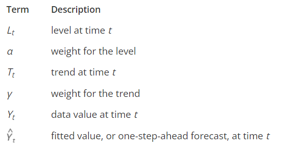

Statistic
Contents
Statistic#
Created with#

Name: Andrian Andi Prakasa
NIM: 210411100114
Exponential Smoothing#
Penjelasan#
Exponential Smoothing atau penghalusan eksponen adalah prosedur perbaikan terus-menerus pada peramalan terhadap objek pengamatan terbaru. teknik ini menitikberatkan pada penurunan prioritas secara eksponensial pada objek pengamatan yang lebih tua. Dengan kata lain, observasi terbaru akan diberikan prioritas lebih tinggi bagi peramalan daripada observasi yang lebih lama
Adapun menurut para ahli adalah berikut:
*Menurut Render dan Heizer (2005), Penghalusan exponential adalah teknik peramalan rata-rata bergerak dengan pembobotan dimana data diberi bobot oleh sebuah fungsi exponential.
*Menurut Trihendradi (2005), analisis exponential smoothing merupakan salah satu analisis deret waktu, dan merupakan metode peramalan dengan memberi nilai pembobot pada serangkaian pengamatan sebelumnya untuk memprediksi nilai masa depan.
*Menurut T. Hani Handoko (2011), Exponential Smoothing adalah suatu tipe teknik peramalan rata-rata bergerak yang melakukan penimbangan terhadap data masa lalu dengan cara eksponensial sehingga data paling akhir mempunyai bobot atau timbangan lebih besar dalam rata-rata bergerak.
Cara untuk menghitung Exponential Smoothing#
Single Exponential Smoothing atau Simple Exponential Smoothing#
Cara ini digunakan untuk peramalan jangka pendek, biasanya hanya satu bulan ke depan. Asumsi sebuah data yang berfluktuasi di nilai mean yang tetap, tanpa trend atau pola pertumbuhan konsisten
Rumus:


Double Exponential Smoothing#
Digunakan ketika data menunjukkan adanya trend. Trend digunakan ketika adanya pemulusan sederhana, kecuali dua komponen harus diperbarui setiap periode - level dan trendnya. Level adalah estimasi yang dimuluskan dari nilai data pada akhir masing-masing periode. Trend adalah Estimasi yang dihaluskan dari pertumbuhan rerata akhir masing-masing periode
Rumus:


Triple Exponential Smoothing#
Metode ini digunakan ketika terdapat trend dan perilaku musiman. Untuk menanganinya dikembangkanlah parameter persamaan ketiga yang disebut metode “holt-winters”. Terdapat dua model yaitu multiplicative seasonal model dan additive seasonal model
Contoh soal Exponential Smoothing#
Data berikut adalah data Bitcoin 12 bulan terakhir dengan pengambilan hanya 6 digit depan (ratusan juta). Berapakah nilai bitcoin untuk bulan depan? Dengan menggunakan rumus Ft = Ft-1+alpha((αt-1)-(ft-1))
keterangan:
Ft = nilai ramalan untuk periode ke-t
αt-1= nilai aktual periode ke t
Ft-1 = nilai ramalan untuk periode waktu yang lalu; t-1
α = konstanta pemulusan (smoothing constant)
import matplotlib.pyplot as plt
import pandas as pd
btc = pd.read_csv("D:\TUGAS\hansha\harga.csv")
print(btc)
Date IDR
0 06-2021 498796
1 07-2021 580136
2 08-2021 700436
3 09-2021 584436
4 10-2021 862007
5 11-2021 825219
6 12-2021 676688
7 01-2022 543905
8 02-2022 619554
9 03-2022 675863
10 04-2022 574634
11 05-2022 421984
import pandas as pd
import matplotlib.pyplot as plt
from statsmodels.graphics.tsaplots import plot_acf
btc = pd.read_csv("D:\TUGAS\hansha\harga.csv")
btc.plot()
plt.xlabel("Date")
plt.ylabel("IDR")
plt.show()

Sebagaimana tahapan langkah di atas, maka yang pertama dihitung adalah menentukan koefisien α, dengan rumus α =(2/n+1), α = (2/12+1) = 1,53846 atau dibulatkan menjadi 0,2
Selanjutnya total dibagi banyaknya periode sehingga F(1) = 7871282/12 = 655940.16
list = [498796,580136,700436,584436,862007, 825219,676688,543905,619554,675863,574634,
421984]
a = 655940.16
c = 2
for l in list:
b = a+0.2*(l-a)
a = b
print(f"F({c}): {b}")
c +=1
F(2): 624511.328
F(3): 615636.2624
F(4): 632596.20992
F(5): 622964.167936
F(6): 670772.7343488
F(7): 701661.98747904
F(8): 696667.1899832321
F(9): 666114.7519865857
F(10): 656802.6015892685
F(11): 660614.6812714149
F(12): 643418.5450171318
F(13): 599131.6360137055
l = [498796,580136,700436,584436,862007, 825219,676688,543905,619554,675863,574634,
421984, 599132]
plt.xlabel("Date")
plt.ylabel("IDR")
plt.plot(l)
[<matplotlib.lines.Line2D at 0x26faf1e1820>]

Moving Average#
Moving Average adalah metode perhitungan untuk menganalisa suatu data dengan membuat serangkaian rata-rata dari sebuah kumpulan data. Model Moving Average disebut juga dengan model rata-rata bergerak. Model Moving Average bisa digunakan untuk meramalkan permintaan data, apabila data bergerak stabil dari periode ke periode selanjutnya.
Cara Menghitung Moving Avarage :#
Mengidentifikasi pola historis dari data aktual permintaan
Memilih model peramalan yang sesuai dengan pola historis dari data aktual permintaan
Melakukan analisis data berdasarkan model peramalan yang dipilih
Memilih model peramalan yang tepat berdasarkan MAD (Mean Absolut Deviation) terkecil
Memeriksa keandalan model peramalan berdasarkan peta kontrol tracking signal
Rumus Moving Avarage:#
Moving average (n) periode = sigma dari (permintaan dalam n - periode terdahulu) kemudian dibagi n dimana (n) adalah banyaknya periode dalam model Moving average, Apabila kita menggunakan Moving average 4 periode, maka rumus dari Moving average 4 periode adalah sigma dari (permintaan dalam 4 - periode terdahulu) dibagi 4
Contoh soal Moving Average sebagai berikut :#
Dinda mempunyai usaha di bidang penjualan Novel, Dinda ingin memperkirakan/meramal (forecasting) berapa Novel yang bisa Dinda jual di bulan Januari 2022. Dengan data penjualan Novel selama tahun 2021 sebagai berikut Januari 25 Novel, bulan Februari 56 Novel, bulan Maret 80 Novel, bulan April 88 Novel, bulan Mei 75 Novel, bulan Juni 110 Novel, bulan Juli 98 Novel, bulan Agustus 135 Novel, bulan September 201 Novel, bulan Oktober 178 Novel, bulan November 198 Novel, bulan Desember 156 Novel. Maka mari kita membantu Dinda dengan metode peramalan Moving Avarage.
novel = [25,56,80,88,75,110,98,135,201,178,198,156]
tot = 0
for i in novel:
tot = tot + i
x = tot/12
print(f"Average: {x}")
Average: 116.66666666666667
plt.ylabel("Penjualan")
plt.xlabel("Month")
plt.plot(novel)
[<matplotlib.lines.Line2D at 0x26faf257190>]

novel.append(x)
plt.ylabel("Penjualan")
plt.xlabel("Month")
plt.plot(novel)
[<matplotlib.lines.Line2D at 0x26faf2b6b50>]